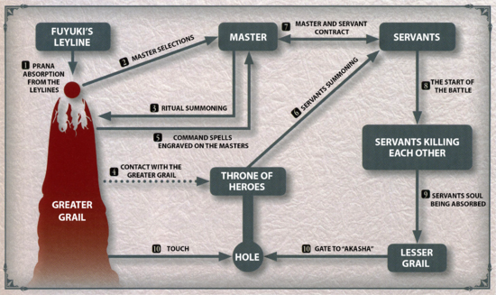

The Fuyuki Holy Grail War (冬木の聖杯戦争, Fuyuki no Seihai Sensō?), also called Heaven's Feel (ヘブンズフィール, Hebunzu Fīru?), is a ritual that has been ongoing for two hundred years and a central element of the Fate series since Fate/stay night. Established by the Tohsaka, Matou, and Einzbern families, the Three Founding Families, as a means to reach Akasha, it is currently thought to be only a competition for something recognized as a possible Holy Grail. Seven magi are chosen by the Grail as Masters and, with support from the Grail, allowed to summon seven Servants to do battle. The winning pair is supposed to be able to claim the Holy Grail and utilize it to grant a wish for each of them. Its true purpose is to actually utilize the seven Servants returning to the root as a way to form a hole directly to it.
At the time there was also a serious flaw in this system, As the Grail required the energy of all seven Servants to help activate the Greater Grail and open a hole to Akasha, it would mean that all Servants including the victor Servant would have to be killed, and since the Grail can only be held by a Servant, activating the Greater Grail, let alone retrieving the Holy Grail, cannot be achieved, as Masters are incapable of doing so without a Servant. This flaw made the Grail capable of only granting wishes to Masters and Servants.
There has yet to be even one true winner who actually claimed the Grail in all five wars, and due to Angra Mainyu being summoned in the Third Holy Grail War, it would be impossible for a winner to have their true wish granted in most cases. The Grail, which is normally "colorless", was corrupted and turned into a manifestation of All the World's Evils. It cannot grant wishes without also causing great destruction, though only the Einzberns are directly aware of this fact. Overall, it is a minor event in the magi world. The stakes could be considered the highest up until the Second War, as the Church became involved afterward. The preparation and decision-making were done by the Mage's Association. The Association also held most of the power over the matter. However, since the "Holy Grail" was part of the name, the Holy Church would not remain silent. "Fake or not, we must control all the Holy Grails" thus the Holy Church sent Arbiters to Fuyuki City, plotting to confiscate the Holy Grail when the opportunity emerged.
The original purpose of the ritual was to recover the Third Magic lost by the Einzberns, the "Cup of Heaven." Around 1790, Justizia Lizleihi von Einzbern, Nagato Tohsaka, and Zouken Makiri created the system in order to create a gate leading to Akasha. At that time, the Mage's Association and the Church were locked in a battle to the death, so a land in the Far East, where the Church could not monitor, was chosen. The Einzberns provided the alchemy to create it and prepared the vessel for the Grail, the Tohsaka provided the necessary land and called forth the Servants, and the Makiri assembled the magecraft to stabilize the starting materials and designed the Command Seals that command the Servants. Back when the Tohsaka were developing the ritual of the Heaven's Feel along with the Makiri and the Einzbern, Nagato's daughter played a greater role in the completion of the Holy Grail War system than her father.
The Holy Grail War itself was devised by Justizia, and she was to become the key of the ritual. The Great Grail was created through forming a large circuit from many multi-layered Crests carved onto a bare rock over fifty meters in diameter. It was covered in multiple layers of circuits, while its many geometric figures turned in place. Justizia stood in the center of the it, and became the key to reenacting the Third Magic. The Holy Grail would have only been just a Holy Grail without her, as her will was required for Heavens Feel. Kishur Zelretch Schweinorg acted as a witness to the event.
Currently, only the Tohsakas want to reach Akasha, while the Einzberns and Makiri only want the completion of the Grail, that is, the revival of the Third Magic. However, both Zouken Matou and Shirou Emiya note these agendas are apparently impossible as there was never a victor for the past four Heaven's Feels and the Grail became corrupted by Angra Mainyu after the Third War.

The Great Grail requires sixty years in order to amass enough mana to summon Servants, making the planning period span over generations. If the Grail is unable to utilize its energy, that which is leftover can reduce the time to as little as a decade, such as in the case of the period between the Fourth and Fifth Wars.
The Grail selects potential Masters anywhere from years in advance to right before the start of the Holy Grail War. It favors those from the three founding families and then picks out suitable magi through a mostly unknown process. There can be more than seven potential Masters, but only the first seven who manage to summon Servants gain Command Spells and the right to act as a Master. It is possible for other unchosen people to gain the right to act as Masters by contracting with Masterless Servants.
The Servants can be summoned in advance as well, but more than two months, such as in Berserker's case, is an anomaly. They can be summoned far away from the site of the ritual, allowing them to be initially summoned in Europe and then brought to Fuyuki. While played off as only a battle royal where the winner is granted a wish, the real point is to fill the vessel of the Grail with the souls of all Seven Servants. Defeated Servants revert to being pure energy and, while the would normally disappear from the timeline by returning to the Throne as information for the true Heroic Spirits, the Grail stops that process temporarily and collects them.
It is possible to make a wish upon it with only the power of five Servants, allowing it to grant most wishes. It is still incomplete, and will take at least six to bring it into form. Its true purpose, opening a hole to the Root, requires all seven Servants. Once the vessel is filled, the energy of the Heroic Spirits returning to the "Throne" is used by the Great Grail in a ritual to open a "hole" leading to Akasha. Due to the corruption of the ritual, most wishes will require great destruction. Kiritsugu Emiya realized the Holy Grail had been corrupted when it presented him a revelation of how it would grant his wish - instead of saving humanity, it showed him a utopia would exterminate all of humankind besides him, his wife, and his daughter; as a result, Kiritsugu rejected the Grail and attempted to destroy it. Within a decade his adopted progeny Shirou would complete this mission and ensure the malice within the tainted artifact would never threaten the planet again.
Though the maximum number of Servants is seven, there is an auxiliary reserve system within the Greater Grail to distribute Command Spells again to allow the summoning for seven more Servants. This was developed for the highly improbable situation that all seven Servants were to cooperate, but it would likely exhaust the leyline of Fuyuki. It is to be used only as an emergency measure to have seven more Servants to oppose those that have joined up.
Learn more at Fate Lore.